Consolidating Storage with Files
The estimated time to complete this lab is 45 minutes.
Traditionally, file storage has been yet another silo within IT, introducing unnecessary complexity and suffering from the same issues of scale and lack of continuous innovation seen in SAN storage. Nutanix believes there is no room for silos in the Enterprise Cloud. By approaching file storage as an app, running in software on top of a proven HCI core, Nutanix Files delivers high performance, scalability, and rapid innovation through One Click management.
In this lab you will work with Files to manage SMB shares and NFS exports and explore the new functionality for Files deployments with File Analytics.
For the purpose of time, and sharing infrastructure resources, a Files cluster has already been provisioned on your cluster. The BootcampFS Files is a single node instance, typical Files deployments would start with 3 File Server VMs, with the ability to scale up and scale out as required for performance.
BootcampFS has been configured to use the Primary network to communicate with the backend storage, iSCSI connections from the CVM to Volume Groups, and the Secondary network for communication with clients, Active Directory, anti-virus services, etc.
Note
It is typically desirable in production environments to deploy Files with dedicated virtual networks for client and storage traffic. When using two networks, Files will, by design, disallow client traffic the storage network, meaning VMs assigned to the primary network will be unable to access shares.
As Files leverages Nutanix Volume Groups for data storage, it can take advantage of the same underlying storage benefits such as compression, erasure coding, snapshots, and replication.
In Prism Element > File Server > File Server, select BootcampFS and click Protect.
Observe the default Self Service Restore schedules, this feature controls the snapshot schedule for Windows’ Previous Versions functionality. Supporting Windows Previous Versions allows end users to roll back changes to files without engaging storage or backup administrators. Note these local snapshots do not protect the file server cluster from local failures and that replication of the entire file server cluster can be performed to remote Nutanix clusters.
Managing SMB Shares
In this exercise you will create and test a SMB share, used to support the unstructured file data needs of a cross-departmental team for the Fiesta application.
Creating the Share
In Prism Element > File Server, click + Share/Export.
Fill out the following fields:
- Name - Initials-FiestaShare
- Description (Optional) - Fiesta app team share, used by PM, ENG, and MKT
- File Server - BootcampFS
- Share Path (Optional) - Leave blank. This field allows you to specify an existing path in which to create the nested share.
- Max Size (Optional) - 200GiB
- Select Protocol - SMB
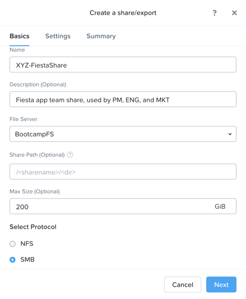
Because this is a single node AOS cluster and therefore a single file server VM, all shares will be Standard shares. A Standard share means that all top level directories and files within the share, as well as connections to the share, are served from a single file server VM.
If this were a three node Files cluster or larger you’d have an option to create a Distributed share. Distributed shares are appropriate for home directories, user profiles, and application folders. This type of share shards top level directories across all Files VMs and load balances connections across all Files VMs within the Files cluster.
Click Next.
Select Enable Access Based Enumeration and Self Service Restore. Select Blocked File Types and enter a comma separated list of extensions like .flv,.mov.
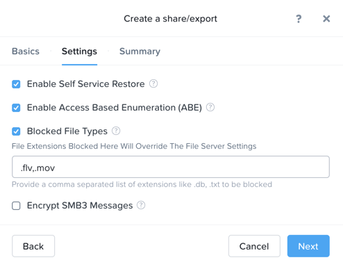
Note
Access Based Enumeration (ABE) ensures that only files and folders which a given user has read access are visible to that user. This is commonly enabled for Windows file shares.
Self Service Restore allows users to leverage Windows Previous Version to easily restore individual files to previous revisions based on Nutanix snapshots.
Blocked File Types allow Files administrators to restrict certain types of files (such as large, personal media files) from being written to corporate shares. This can be configured on a per Server or per Share basis, with per Share settings overriding Server wide settings.
Click Next.
Review the Summary and click Create.
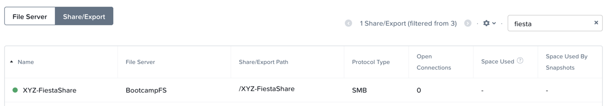
It is common for shares utilized by many people to leverage quotas to ensure fair use of resources. Files offers the ability to set either soft or hard quotas on a per share basis for either individual users within Active Directory, or specific Active Directory Security Groups.
In Prism Element > File Server > Share/Export, select your share and click + Add Quota Policy.
Fill out the following fields and click Save:
- Select Group
- User or Group - SSP Developers
- Quota - 10 GiB
- Enforcement Type - Hard Limit
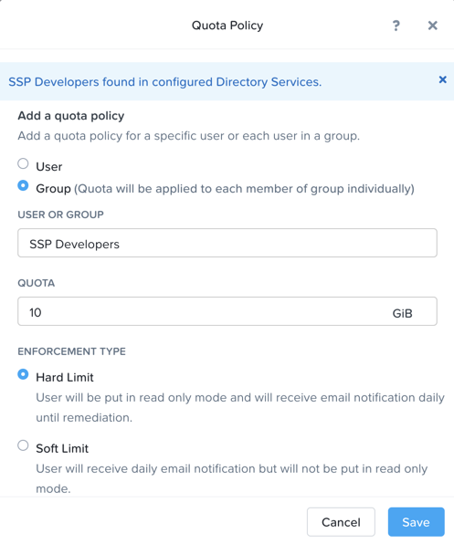
Click Save.
Testing the Share
Connect to your Initials-WinTools VM via VM console as a non-Administrator NTNXLAB domain account:
Note
You will not be able to connect using these accounts via RDP.
- user01 - user25
- devuser01 - devuser25
- operator01 - operator25
- Password nutanix/4u
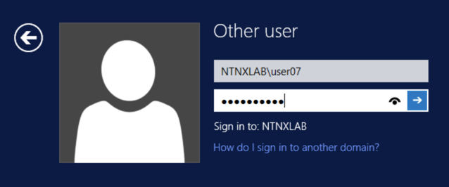
Note
The Windows Tools VM has already been joined to the NTNXLAB.local domain. You could use any domain joined VM to complete the following steps.
Open \\BootcampFS.ntnxlab.local\ in File Explorer.
Open a browser within your Initials-WinTools desktop and download sample data to populate in your share:
Extract the contents of the zip file into your file share.
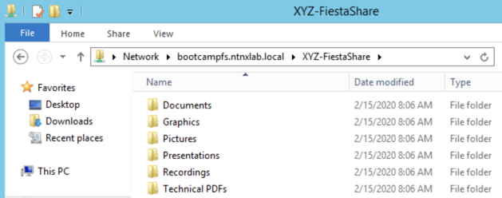
- The NTNXLAB\Administrator user was specified as a Files Administrator during deployment of the Files cluster, giving it read/write access to all shares by default.
- Managing access for other users is no different than any other SMB share.
Open PowerShell and try to create a file with a blocked file type by executing the following command:
New-Item \\BootcampFS\INITIALS-FiestaShare\MyFile.flv
Observe that creation of the new file is denied.
Return to Prism Element > File Server > Share/Export, select your share. Review the Share Details, Usage and Performance tabs to understand the high level information available on a per share basis, including the number of files & connections, storage utilization over time, latency, throughput, and IOPS.
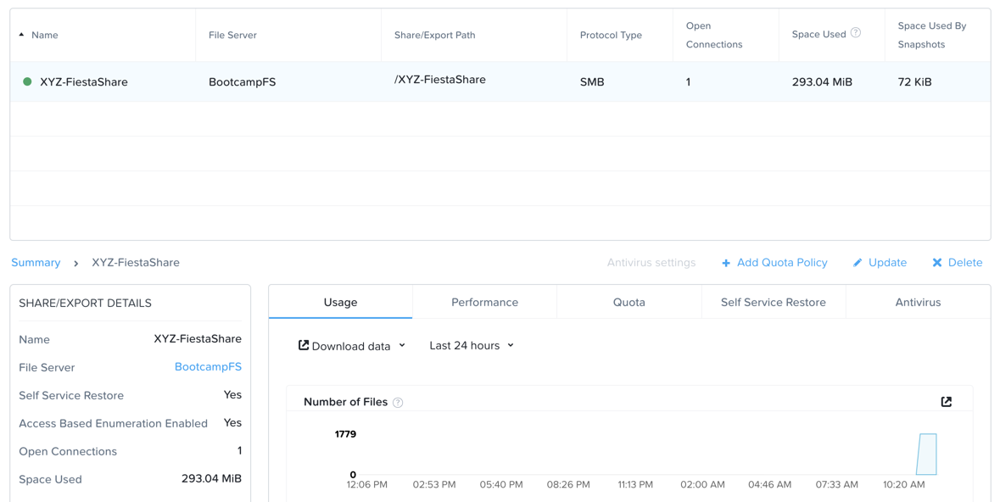
In the next exercise, you will see how Files can provide further insights into usage of each File Server and Share.
File Analytics
In this exercise you will explore the new, integrated File Analytics capabilities available in Nutanix Files, including scanning existing shares, creating anomaly alerts, and reviewing audit details. File Analytics is deployed in minutes as a standalone VM through an automated, One Click operation in Prism Element. This VM has already been deployed and enabled in your environment.
In Prism Element > File Server > File Server, select BootcampFS and click File Analytics.
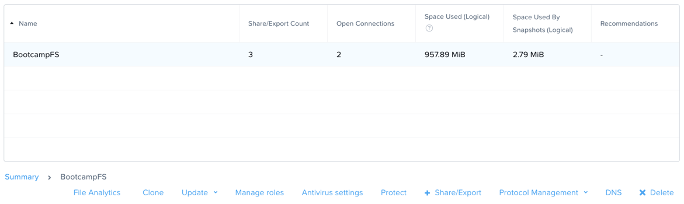
Note
File Analytics should already be enabled, but if prompted you will need to provide your Files administrator account, as Analytics will need to be able to scan all shares.
- Username: NTNXLAB\administrator
- Password: nutanix/4u
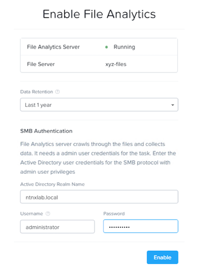
As this is a shared environment, the dashboard will likely already be populated with data from shares created by other users. To scan your newly created share, click > Scan File System. Select your share and click Scan.
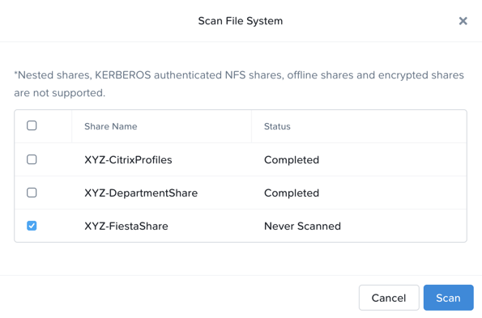
Note
If your share is not shown, please give it some time to get populated…
Close the Scan File System window and refresh your browser.
You should see the Data Age, File Distribution by Size and File Distribution by Type dashboard panels update.
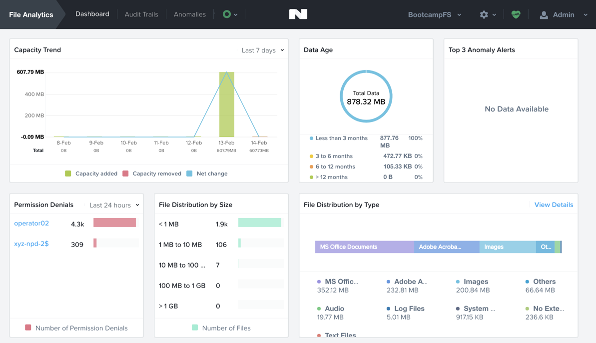
Under….
From your Initials-WinTools VM, create some audit trail activity by opening several of the files under Sample Data.
Note
You may need to complete a short wizard for OpenOffice if using that application to open a file.
Refresh the Dashboard page in your browser to see the Top 5 Active Users, Top 5 Accessed Files and File Operations panels update.
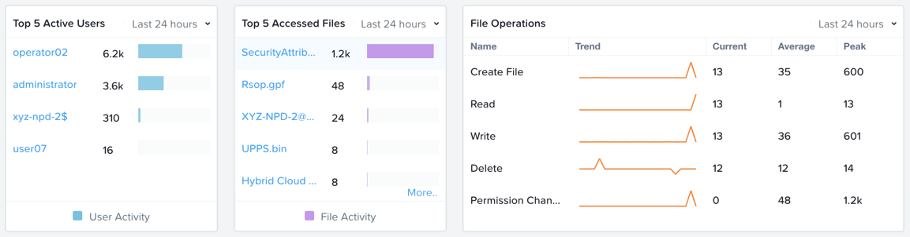
To access the audit trail for your user account, click on your user under Top 5 Active Users.
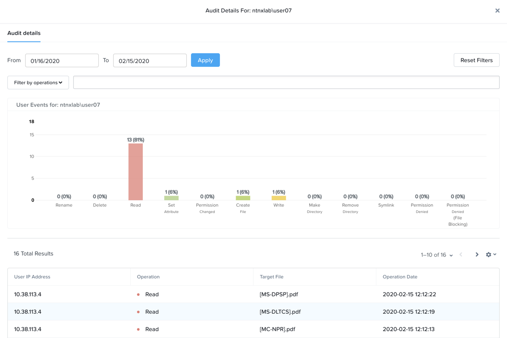
Alternatively, you can select Audit Trails from the toolbar and search for your user or a given file.
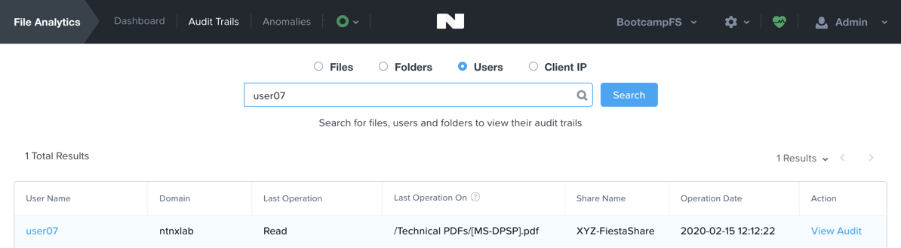
Note
You can use wildcards for your search, for example .doc
File Analytics puts simple, yet powerful information in the hands of storage administrators, allowing them to understand and audit both utilization and access within a Nutanix Files environment.
Using NFS Exports
In this exercise you will create and test a NFSv4 export, used to support clustered applications, store application data such as logging, or storing other unstructured file data commonly accessed by Linux clients.
Enabling NFS Protocol
Note
Enabling NFS protocol only needs to be performed once per Files server, and may have already been completed in your environment. If NFS is already enabled, proceed to Configure User Mappings.
In Prism Element > File Server, select your file server and click Protocol Management > Directory Services.
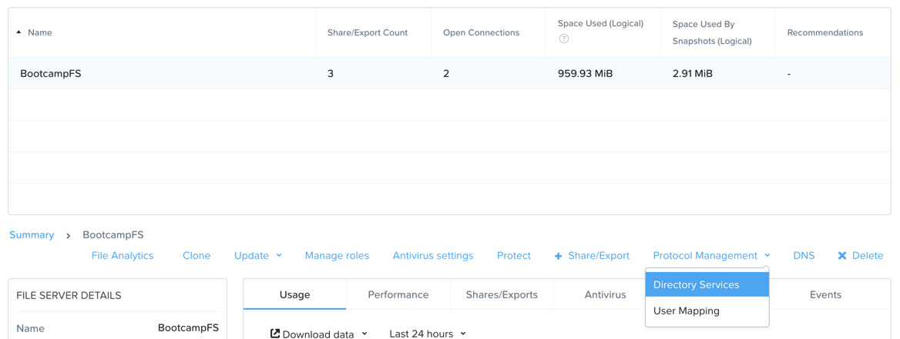
Select Use NFS Protocol with Unmanaged User Management and Authentication, and click Update.
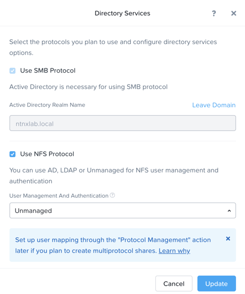
Creating the Export
In Prism > File Server, click + Share/Export.
Fill out the following fields:
- Name - logs
- Description (Optional) - File share for system logs
- File Server - Initials-Files
- Share Path (Optional) - Leave blank
- Max Size (Optional) - Leave blank
- Select Protocol - NFS
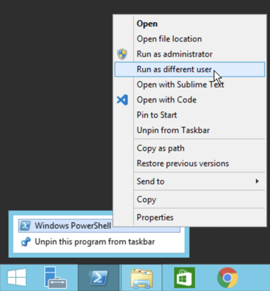
Click Next.
Fill out the following fields:
- Select Enable Self Service Restore
- These snapshots appear as a .snapshot directory for NFS clients.
- Authentication - System
- Default Access (For All Clients) - No Access
- Select + Add exceptions
- Clients with Read-Write Access - The first 3 octets of your cluster network.* (e.g. 10.38.1.*)
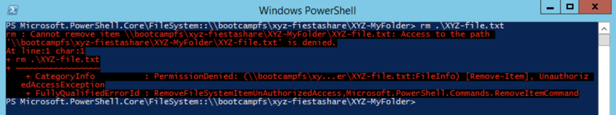
By default an NFS export will allow read/write access to any host that mounts the export, but this can be restricted to specific IPs or IP ranges.
Click Next.
Review the Summary and click Create.
Testing the Export
You will first provision a CentOS VM to use as a client for your Files export.
Note
If you have already deployed the Linux Tools VM as part of another lab, you may use this VM as your NFS client instead.
In Prism > VM > Table, click + Create VM.
Fill out the following fields:
- Name - Initials-NFS-Client
- Description - CentOS VM for testing Files NFS export
- vCPU(s) - 2
- Number of Cores per vCPU - 1
- Memory - 2 GiB
- Select + Add New Disk
- Operation - Clone from Image Service
- Image - CentOS
- Select Add
- Select Add New NIC
- VLAN Name - Secondary
- Select Add
Click Save.
Select the Initials-NFS-Client VM and click Power on.
Note the IP address of the VM in Prism, and connect via SSH using the following credentials:
- Username - root
- Password - nutanix/4u
Execute the following:
[root@CentOS ~]# yum install -y nfs-utils #This installs the NFSv4 client
[root@CentOS ~]# mkdir /filesmnt
[root@CentOS ~]# mount.nfs4 <Intials>-Files.ntnxlab.local:/ /filesmnt/
[root@CentOS ~]# df -kh
Filesystem Size Used Avail Use% Mounted on
/dev/mapper/centos_centos-root 8.5G 1.7G 6.8G 20% /
devtmpfs 1.9G 0 1.9G 0% /dev
tmpfs 1.9G 0 1.9G 0% /dev/shm
tmpfs 1.9G 17M 1.9G 1% /run
tmpfs 1.9G 0 1.9G 0% /sys/fs/cgroup
/dev/sda1 494M 141M 353M 29% /boot
tmpfs 377M 0 377M 0% /run/user/0
*intials*-Files.ntnxlab.local:/ 1.0T 7.0M 1.0T 1% /afsmnt
[root@CentOS ~]# ls -l /filesmnt/
total 1
drwxrwxrwx. 2 root root 2 Mar 9 18:53 logs
Observe that the logs directory is mounted in /filesmnt/logs.
Reboot the VM and observe the export is no longer mounted. To persist the mount, add it to /etc/fstab by executing the following:
echo 'Intials-Files.ntnxlab.local:/ /filesmnt nfs4' >> /etc/fstab
The following command will add 100 2MB files filled with random data to /filesmnt/logs:
mkdir /filesmnt/logs/host1
for i in {1..100}; do dd if=/dev/urandom bs=8k count=256 of=/filesmnt/logs/host1/file$i; done
Return to Prism > File Server > Share > logs to monitor performance and usage.
Note that the utilization data is updated every 10 minutes.
Multi-Protocol Shares
Files provides the ability to provision both SMB shares and NFS exports separately - but also now supports the ability to provide multi-protocol access to the same share. In the exercise below, you will configure your existing Initials-FiestaShare to allow NFS access, allowing developer users to re-direct application logs to this location.
Testing the Export
To test the NFS export, connect via SSH to your Initials-LinuxToolsVM VM:
- User Name - root
- Password - nutanix/4u
Execute the following commands:
[root@CentOS ~]# yum install -y nfs-utils #This installs the NFSv4 client
[root@CentOS ~]# mkdir /filesmulti
[root@CentOS ~]# mount.nfs4 bootcampfs.ntnxlab.local:/<Initials>-FiestaShare /filesmulti
[root@CentOS ~]# dir /filesmulti
dir: cannot open directory /filesmulti: Permission denied
[root@CentOS ~]#
Note
The mount operation is case sensitive.
Because the default mapping is to deny access the Permission denied error is expected. You will now add an explicit mapping to allow access to the non-native NFS protocol user. We will need to get the user ID (UID) to create the explicit mapping.
Execute the following command and take note of the UID:
[root@CentOS ~]# id
uid=0(root) gid=0(root) groups=0(root)
[root@CentOS ~]#
In Prism Element > File Server, select your file server and click Protocol Management > User Mapping.
Click Next to advance to Explicit Mapping.
Under One-to-onemapping list, click Add manually.
Fill out the following fields:
- SMB Name - NTNXLAB\devuser01
- NFS ID - UID from previous step (0 if root)
- User/Group - User
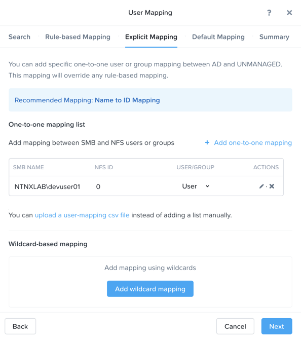
Under Actions, click Save.
Click Next > Next > Save to complete updating your mappings.
Return to your Initials-LinuxToolsVM SSH session and try to access the share again:
[root@CentOS ~]# dir /filesmulti
Documents\ -\ Copy Graphics\ -\ Copy Pictures\ -\ Copy Presentations\ -\ Copy Recordings\ -\ Copy Technical\ PDFs\ -\ Copy XYZ-MyFolder
[root@CentOS ~]#
From your SSH session, create a text file and then validate you can access the file from your Windows client.
Takeaways
What are the key things you should know about Nutanix Files?
- Files can be rapidly deployed on top of existing Nutanix clusters, providing SMB and NFS storage for user shares, home directories, departmental shares, applications, and any other general purpose file storage needs.
- Files is not a point solution. VM, File, Block, and Object storage can all be delivered by the same platform using the same management tools, reducing complexity and management silos.
- Files can scale up and scale out with One Click performance optimization.
- File Analytics helps you better understand how data is utilized by your organizations to help you meet your data auditing, data access minimization and compliance requirements.